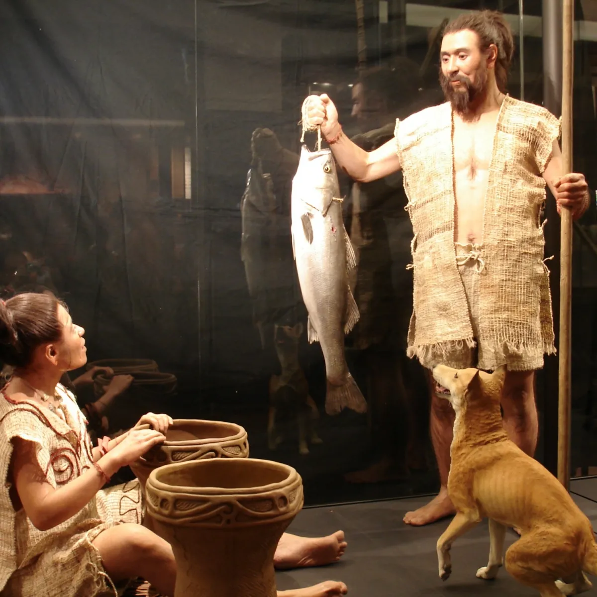
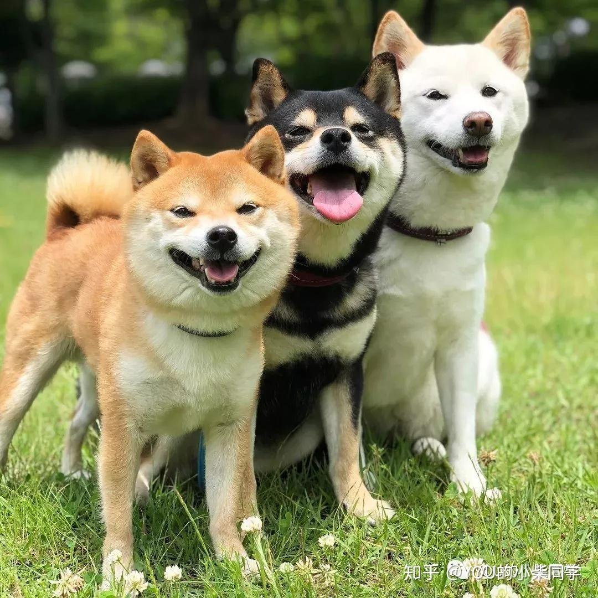
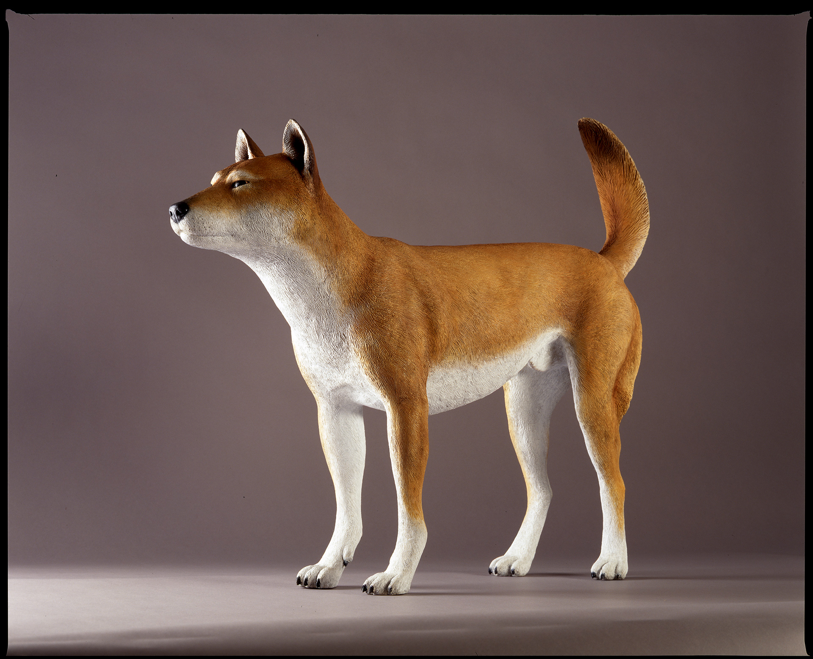
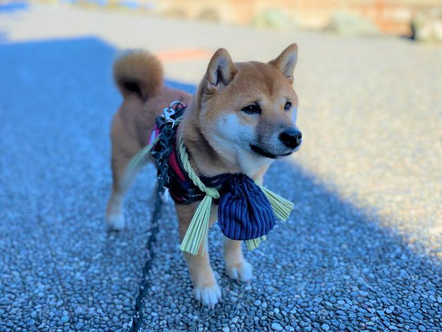

1. 柴犬は「縄文犬」の直系？
最新のゲノム解析（DNAの研究）によって、

柴犬は世界中のあらゆる犬種の中で、最もオオカミに近く、かつ縄文犬の遺伝的な特徴を強く残していることが判明しています。 縄文犬とは約1万年以上前から日本列島で人間と一緒に暮らしていた犬のこと。 縄文犬は小柄で、現代の柴犬よりも鼻先が少し細長いのが特徴です。遺跡からは丁寧に埋葬された骨も見つかっており、
古来より単なる家畜ではなく、家族や狩りの相棒として深い絆で結ばれていたことが分かっています。 柴犬との共通点 立ち耳、巻き尾、そして獲物を追いかける鋭い五感や、自立心の強さは縄文犬から受け継がれた「野生の残り香」と言えます。2. 「弥生犬」との混ざり合い
歴史が進み、弥生時代になると大陸から渡来人と共に「弥生犬」が日本にやってきました。

多くの日本犬（秋田犬や紀州犬など）は、この弥生犬と縄文犬が混ざり合って形作られました。 しかし、柴犬（特に山岳地帯にいた地柴）は、比較的他の血が混ざりにくい環境にいたため、縄文犬のピュアな特徴を現代まで守り抜くことができたと考えられています。3. 神様のお使い？「おかげ参りの犬」

江戸時代、病気などで参拝できない主人に代わり、犬が「代参」する「おかげ犬」という風習がありました。 首に道中の費用や食費を入れた袋を巻き、旅人や街道筋の人々に助けられながら、数百キロ離れた伊勢神宮を目指したのです。 道中では「神様のお使い」として温かく迎えられ、無事に役目を果たして帰宅した犬も多く記録されています。 人々の善意と信仰心に支えられた、日本独特の心温まる動物史といえます。